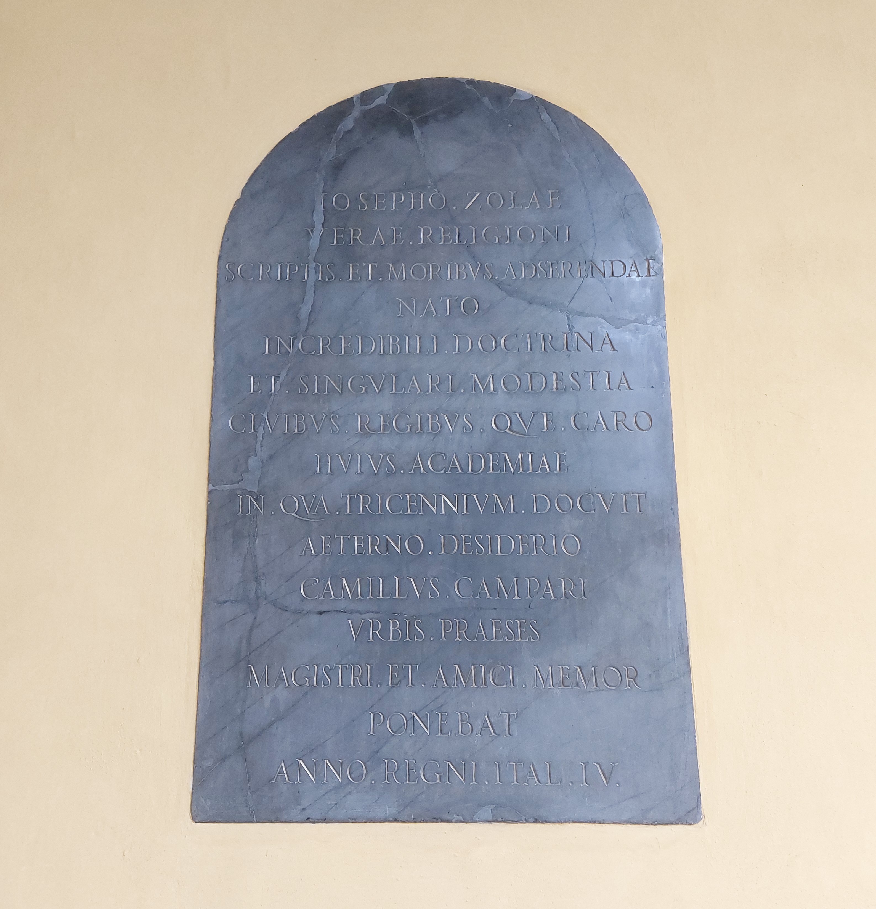

Ruolo: Teologo e Storico (1739–1806)

"A Giuseppe Zola, nato per difendere la vera religione con gli scritti e con i modi, di incredibile dottrina e di singolare modestia, caro ai cittadini e ai sovrani, di questa Università nella quale insegnò per trent'anni. Con eterno rimpianto Camillo Campari, governatore della città, in ricordo del maestro e dell'amico, nell'anno IV del regno d'Italia pose questa (lapide)."
"To Giuseppe Zola, born to defend the true religion with his works and behavings, of incredible doctrine and unique modesty, dear to the citizens and the sovereigns, from this University in which he taught for thirty years. With eternal mourning, Camillo Campari, governor of the city, posed (this headstone) in remembrance of the master and friend, in the 4th year of Italy's kingdom."